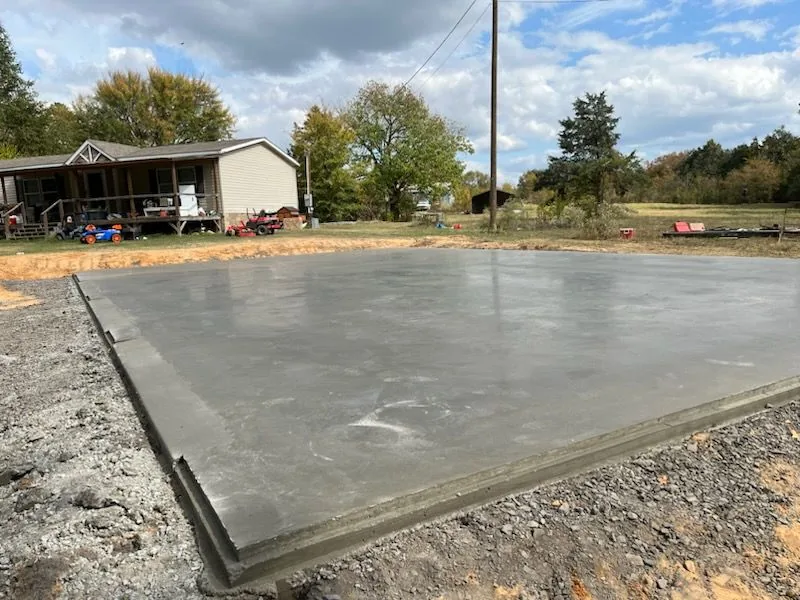

Why concrete for a patio
Pavers shift and grow weeds in the joints. Wood decks need staining and eventually rot. A properly built concrete patio is one solid surface that sits level for decades, needs almost nothing from you, and can look however you want it to — plain and clean or stamped to look like cut stone. It's also the surface that handles the most: furniture, a grill, a hot tub, kids, dogs and Arkansas weather.


How we build a patio
Layout on site
The first thing Logan does at the estimate is lay the patio out with you. Stakes and string on the ground show you exactly how far it comes off the house and how the furniture will fit. It's a lot easier to move a string than a slab. We'll talk about steps if there's a grade change, how the patio meets a door threshold, and where the hose bib, downspouts and dryer vent are so nothing ends up in the way.
Prep and drainage
Sod and topsoil come out, a gravel base goes in and gets compacted. The slab is pitched a small amount away from the house so water runs off into the yard. A patio that pools water against the foundation is a patio that's going to cause a problem, so this gets checked twice.
Forms, steel and pour
Forms are set for straight edges and any curves, reinforcement goes in, and the concrete is placed and finished. Patios are typically four inches thick. If you're planning a hot tub or a heavy outdoor kitchen, say so — that footprint gets extra thickness and steel.
Finish options
- Broom finish — the clean, classic look. Slip-resistant, easy to keep up, and the most economical.
- Stamped — patterns like flagstone, ashlar slate or cobble pressed into the surface while it's still workable. See the stamped and decorative page for the full picture.
- Integral color — color mixed through the whole batch, so it never wears off. Warm tans and grays pair well with brick and stone homes; charcoal looks sharp against light siding and timber.
- Borders and bands — a broom-finished field with a stamped or colored edge gives you most of the look for less of the labor.
Joints, curing and clean-up
Control joints are cut in a layout that looks planned, not random. Stamped patios get sealed once they've cured. Forms come out, the lawn edge is backfilled, and the yard is put back. The only sign we were there should be the patio.
Covered patios, porch slabs and pavilions
Some of the best patios live under a roof. If you're building a covered porch, a pavilion or a pergola, Caliber coordinates with your builder so the slab and the post footings are planned together and the finished floor height works with the structure. The stamped patio in the photos on this page is exactly that kind of job: a charcoal stamped slab under a timber-frame pavilion with wide steps down to the driveway. Have a look at it in completed jobs.
Steps and grade changes
Arkansas yards are rarely flat. Where the patio meets a slope we form and pour steps right into the slab — wide, shallow treads that are comfortable to walk and match the patio's finish. Steps are also where a stamped pattern really shows off, because the risers and treads carry the texture around a corner.
Timeline for a patio
A typical patio is a two-to-three-day job plus curing time, with a start date usually within about a week of the estimate. Stamped work adds a day for color, stamping and sealing. We don't pour in rain or freezing temperatures, so weather can move things — you'll always know ahead of time.
Serving Northwest Arkansas
Caliber pours patios across Gentry, Siloam Springs, Bentonville, Centerton, Rogers, Springdale and Fayetteville. Call or send the form and Logan will come lay one out with you.

Questions about patios
Broom finish or stamped — which should I pick?
Broom finish is clean, slip-resistant and the most economical. Stamped concrete is for when the patio is meant to be seen — it mimics stone, slate or pavers in a solid slab. Many people do a broom-finish field with a stamped or colored border. Logan will walk you through both on the estimate.
Can a patio go under a covered porch or pavilion?
Yes, and it's one of our favorite jobs. We coordinate with your builder so post footings and the slab work together, and we pitch the slab so water still drains out from under the roof.
How big should a patio be?
Big enough for how you'll actually use it. A table for six with room to pull chairs out needs roughly 12 by 14 feet; a grill station and a seating area need more. Logan will lay it out with you on site with stakes and string so you can see it before anything is poured.
Will the patio drain away from my house?
It has to. Every patio we pour is pitched away from the foundation so rain and hose water run off into the yard, not against the slab or the house.
How long until I can put furniture on it?
Walk on it after a day or two, furniture after about a week. For a stamped patio the sealer needs to cure too — we'll give you exact timing for your slab.
Ready to talk it through? Request a free estimate or call (479) 212-3971. Logan answers the phone himself.